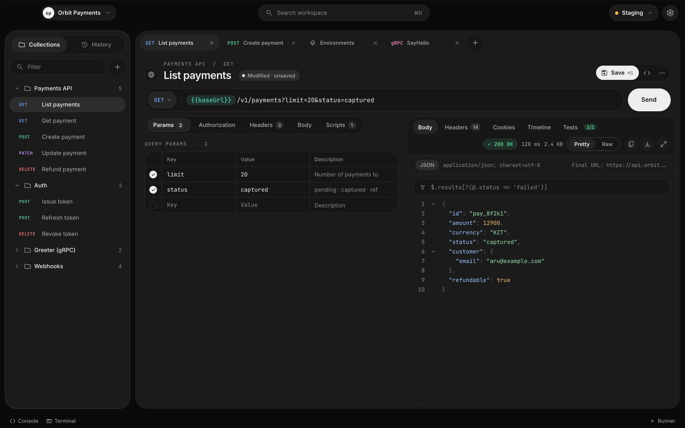

Connect the steps with Flows.
Chain saved requests, scripts, conditions, loops, and delays on a node canvas. Pass output from one step to the next and follow the run as it happens.
THE DESKTOP API CLIENT THAT STAYS LOCAL
Send a request. Inspect the response. Test the whole collection. Keep your work in files you own.
HTTP & gRPC, powered by Rust. No account required.
Download bonk Take a closer look
HTTP + gRPCOne place for both.
Native desktopRust engine. Tauri shell.
Plain request filesReadable. Portable. Yours.
No accountOpen a folder and start.
FROM ONE REQUEST TO THE WHOLE WORKFLOW
Debug an endpoint, explore a service, or run a repeatable API check. The tools fit together in the same workspace.
Params, headers, inherited auth, JSON, multipart, binary, and GraphQL bodies. Read responses with syntax highlighting, JSONPath filters, folding, and a side-by-side layout.

HTTP request · query parameters · formatted JSON response
Chain saved requests, scripts, conditions, loops, and delays on a node canvas. Pass output from one step to the next and follow the run as it happens.
Paste cURL. Import Postman collections or OpenAPI / Swagger specs. Export a collection, or turn a request into a code snippet.
A command palette, configurable shortcuts, searchable history, resizable panels, a console, and a terminal keep everyday work close.
A FOLDER. NOT A CLOUD WORKSPACE.
Open a directory and make it your workspace. Each saved request
becomes a readable *.bonk.json file. The folders on
disk are the collections in your sidebar.
Review changes, share the folder, or commit it with your project. Bonk includes Git diffs, staging, commits, branches, pull, and push through your system Git.
{
"name": "List payments",
"protocol": "http",
"request": {
"method": "GET",
"url": "{{baseUrl}}/v1/payments",
"headers": {}
}
}YOUR API WORKSPACE, MEET YOUR AI TOOLS
Bonk’s MCP server lets compatible assistants inspect your workspace, create requests, explore gRPC schemas, and run API calls with the permissions you choose.
Set it up from Settings → AI / MCP. Choose an environment, allow editing or network access, and install for detected clients.
Read the MCP guide“Find the payments requests, inspect the schema, and add a test for the response.”
Local STDIO · remote Streamable HTTP
Read-only mode and host
allowlists available.
SMALL BY DESIGN
HTTP, gRPC, file operations, and Git run through a native Rust core. Tauri uses the system WebView, so Bonk ships without a bundled Chromium runtime. Fonts are included locally.
OPEN A FOLDER. SEND YOUR FIRST REQUEST.
Choose your platform and get started.
No signup. No workspace
subscription.
Install with Homebrew.
brew install --cask nekidaz/tap/bonk
The app is not notarized by Apple. On first launch, follow the release’s macOS installation notes.
Download the installer from the latest release, then follow the setup wizard.
Download Windows installerRelease assets are the current source of truth for available builds.
Choose an AppImage or Debian package.
chmod +x bonk_*.AppImage
Then launch the AppImage, or install the .deb with your package manager.
Already installed? Check for signed updates from Settings.
A FEW PRACTICAL DETAILS
No account is required. Editing, organizing, and inspecting saved work is local. Sending a request needs access to the target API; update checks and Git remotes also use the network.
Yes. Import a Postman Collection v2.x or an OpenAPI / Swagger file, or paste a cURL command into the request URL bar. Bonk also exports Postman collections and OpenAPI specifications. Import support does not imply full Postman compatibility.
Saved requests live in the workspace folder you select. App preferences and session state live separately in the platform application-data directory. Variables marked as secret use the OS keychain when available; keep credentials out of files you commit.
You choose whether the MCP server can edit files or call APIs. Read-only mode, disabled network access, and target-host allowlists are available. Bonk supports local STDIO and remote Streamable HTTP connections.
This repository contains public releases, documentation, and the website. The application source is maintained separately. See the included license for the terms that apply to distributed material.